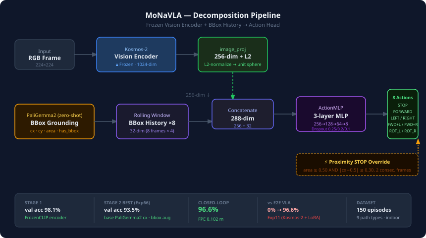

Decomposition-based VLA for mobile robot basket navigation.
96.6% closed-loop success (PG2 grounding · SigLIP action pipeline)
vs E2E Kosmos-2 0% — ×9.4 pipeline gap.
MoNaVLA investigates Vision-Language-Action (VLA) models for mobile robot basket navigation.
End-to-end fine-tuning of Kosmos-2 with LoRA collapses to 0% closed-loop success due to a
structural text-attention failure in the Google-robot post-trained backbone.
We instead adopt a decomposition pipeline: PaliGemma2's frozen SigLIP vision encoder
extracts frame features (L2-normalized, 256-dim), concatenated with 8-frame bbox history (32-dim),
and fed to a 3-layer ActionMLP predicting 8 discrete actions.
PaliGemma2 also serves as the grounder: detect gray basket → 4-filter validated bbox → temporal N=3 goal trigger.
This pipeline achieves 96.6% closed-loop success (FPE 0.094 m)
— a ×9.4 improvement over a simple MLP baseline (10.3%).
Ablation confirms that the L2-norm + bbox augmentation pipeline is the sole performance driver;
grounding source (HSV heuristic, base PG2, fine-tuned LoRA) is irrelevant once the pipeline is correct.
Zero-shot linear probe (96.6%) and basket masking ablation (9/9 action flip) provide causal
evidence that the frozen SigLIP encoder independently localizes the basket.
| Method | Architecture | CL ↑ | FPE ↓ | Note |
|---|---|---|---|---|
| E2E VLA (Exp11) | Kosmos-2 + LoRA | 0.0% | 1.454 m | Text attn 0%, structural failure |
| Decomp v1 (Exp14) | CLIP + BBox MLP | 66.7% | 0.555 m | First decomposition baseline |
| Simple MLP (Exp65b) | SigLIP + plain MLP | 10.3% | — | No L2-norm, no aug → pipeline ablation |
| Ours (Exp66) ★ | PG2 grounding + SigLIP + L2-aug | 96.6% | 0.094 m | SOTA · MLP w=4 |
| Ours (Exp66 LSTM) | PG2 grounding + SigLIP + L2-aug | 96.6% | 0.080 m | Best FPE · LSTM w=16 |
CL = Closed-Loop success (FPE < 0.5m AND TLD ∈ [0.7, 1.5]). Evaluated on V5 dataset (30 ep val, 9 path types).
| Head | Window | CL ↑ | FPE ↓ |
|---|---|---|---|
| Linear | 4 | 69.0% | — |
| FCHead | 4 | 93.1% | — |
| MLP ★ | 4 | 96.6% | 0.094 m |
| LSTM | 16 | 96.6% | 0.080 m |

PaliGemma2 SigLIP (frozen) → 256-dim L2-norm → concat BBox History (32-dim) → ActionMLP → 8 discrete actions.
Grounder: PaliGemma2 detect gray basket → 4-filter bbox validation → temporal N=3 goal trigger.
Proximity STOP: area ≥ 0.25 AND |cx − 0.5| ≤ 0.35 for 3 consecutive frames (GOAL_CONSEC_FRAMES=3).
데이터 수집부터 E2E 실패, decomposition 발견, SOTA 확정까지 전 과정. CH36이 최신 결론 (6/12 실사 테스트·논문 제출 결정).
Read story → Visual Evidence아키텍처 다이어그램 · Zero-shot Probe 96.6% · Masking 9/9 flip · 5-Track 검증 요약.
View figures → Grounding HubKosmos-2 · PaliGemma2 · LoRA 계열 7모델 grounding 비교. side-angle / free / augmentation 케이스 포함.
Explore → CL EvaluationExp11(0%) → Exp14(66.7%) → Exp54(96.6%) → Exp66/67(96.6%). path_type별 성공률 포함.
View results → Paper DraftTable 1(주요 방법 비교), Table 2(파이프라인×cx 소스 ablation). E2E 0% vs 96.6% 핵심 수치.
View draft → Robot Tests · LiveS1~S6 512프레임 분석. 카메라 버그 → 4종 필터 → temporal N=3 패치 누적. S4 24프레임 필름스트립 · 파이프라인 플로우 비교.
View robot tests → ArchiveExp01~67 전체 실험 링크, 구 보고서, 미팅 브리핑, 개발 로그 등 전체 히스토리.
Browse archive →